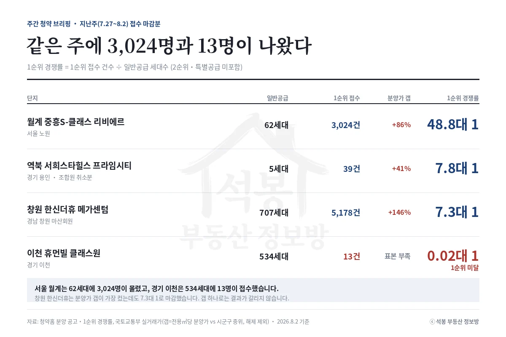
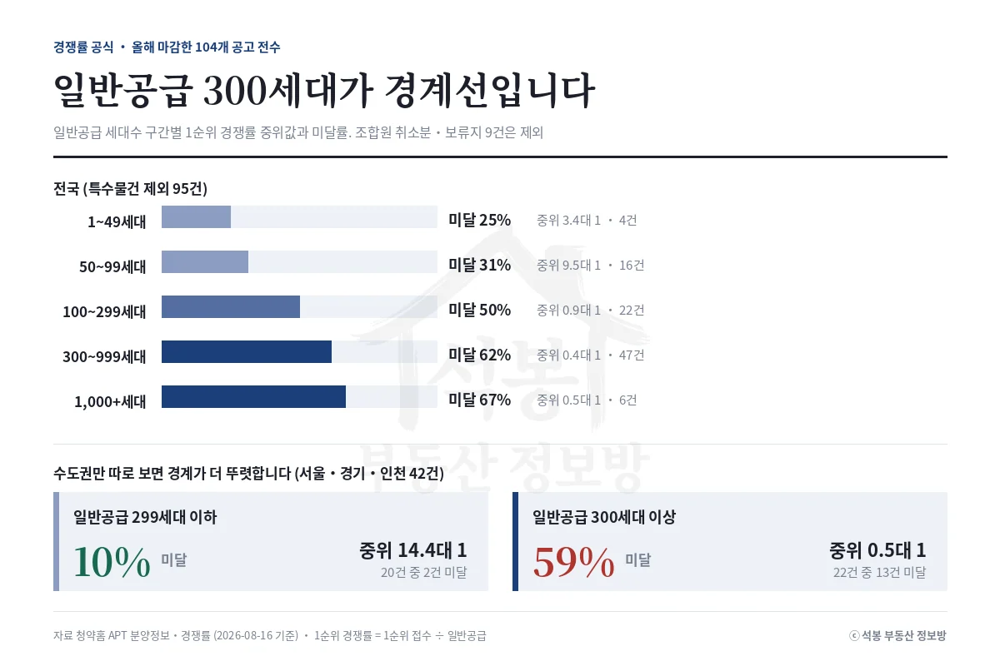
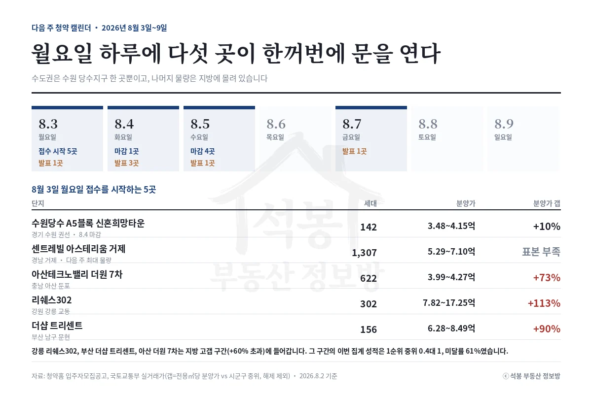

8월 12일에 세 곳이 함께 마감했습니다. 가장 비싼 곳은 마감했고, 가장 싼 곳에서 17.5대 1이 나왔습니다. 미달한 한 곳은 지난주에 저희가 따로 짚었던 김포 한강 푸르지오 리버프론트입니다. 다음 주에는 화요일 하루에만 여섯 곳이 문을 엽니다.
지난주 성적표: 17.5대 1과 0.6대 1
단지 · 위치
일반공급
1순위 접수
1순위 경쟁률
시군구 시세 대비
세종 우미 린 센터파크 세종 다솜동 · 총 676세대
243세대
4,250건
17.5대 1
+7.7%
두산위브더제니스 대연 부산 남구 대연동 · 총 176세대
128세대
351건
2.7대 1
+113.1%
한강 푸르지오 리버프론트 경기 김포시 고촌읍 · 총 2,432세대
2,133세대
1,307건
0.6대 1 미달
+65.2%

이 글에서 말하는 경쟁률은 모두 1순위 경쟁률(1순위 접수 건수 ÷ 일반공급 세대수)입니다. 특별공급과 2순위가 빠져 있어 청약홈에 뜨는 총 접수 건수와는 달라 보일 수 있습니다.
가격만 놓고 보면 결과가 거꾸로입니다. 부산 남구 대연동은 전용 평당 분양가가 4,228만원으로 남구 실거래 중위의 두 배가 넘는데도 2.7대 1로 마감했습니다. 대연동은 대연힐스테이트푸르지오 같은 2천세대급 단지가 늘어선 부산 남구의 주거 중심이고, 이 동네 2020년 이후 신축과 견주면 갭이 +28.5%로 내려앉습니다. 반대로 세종 다솜동은 세종시 중위보다 7.7% 높은 데 그쳤는데 결과는 17.5대 1이었습니다. 미달한 김포 고촌읍은 그 사이 어디쯤입니다.
여기서부터는 회원에게 보여드립니다
카카오 로그인 3초면 전문을 읽을 수 있습니다. 무료입니다.
가입하시면 지역 시장조사 보고서(약식)를 2회 무료로 요청하실 수 있습니다.
이미 회원이면 같은 버튼으로 로그인만 됩니다
경쟁률 공식: 일반공급 300세대가 경계선입니다
올해 마감한 공고 104건의 1순위 성적을 일반공급 세대수로 갈라 봤습니다. 다만 그전에 걸러낼 것이 있습니다. 조합원 취소분과 보류지 9건은 애초에 몇 세대씩만 나오는 특수 물건이고, 그중 6건이 가장 작은 구간에 몰려 있어 그대로 두면 "작을수록 잘 팔린다"는 착시가 생깁니다. 아래는 그 9건을 뺀 95건입니다.
일반공급 세대수
공고 수
1순위 경쟁률 중위
미달률
1~49세대
4건
3.4대 1
25%
50~99세대
16건
9.5대 1
31%
100~299세대
22건
0.9대 1
50%
300~999세대
47건
0.4대 1
62%
1,000세대 이상
6건
0.5대 1
67%

100세대를 넘어서면서 중위 경쟁률이 1대 1 아래로 내려앉습니다. 여기에는 지역이 섞여 있습니다. 300세대 이상 구간에는 지방 물량이 많고 서울은 거의 없습니다. 그래서 수도권만 따로 떼어 다시 셌습니다.
서울·경기·인천 42건 가운데
일반공급 299세대 이하 20건 → 미달 2건(10%), 중위 14.4대 1
일반공급 300세대 이상 22건 → 미달 13건(59%), 중위 0.5대 1
지역을 수도권으로 묶어 놓아도 경계는 그대로였습니다. 오히려 더 선명해졌습니다. 물량이 많다고 인기가 없는 것이 아니라, 1,000세대짜리 단지가 들어설 만한 땅이 남아 있는 자리가 대개 외곽이기 때문입니다. 지난주 김포가 일반공급 2,133세대였습니다.
체크 5가지를 지난주 세 곳에 대봤습니다
체크 항목
세종 우미린
부산 대연
김포 한강푸르지오
1. 시세 갭 시군구 중위 대비
+7.7%
+113.1%
+65.2%
2. 비교 기준 보정 같은 생활권 신축 대비
-5.9%
+28.5%
+28.6%
3. 지역 리그 올해 미달률
세종 0%
부산 77.8%
경기 54.8%
4. 물량 성격 일반공급 세대수
243세대
128세대
2,133세대
5. 특별공급 비중 클수록 1순위 모수가 작다
64.1%
27.3%
12.3%
결과
17.5대 1
2.7대 1
0.6대 1
2번 줄을 보시면 부산과 김포가 나란히 +28%대입니다. 시군구 전체로 볼 때는 113%와 65%로 크게 달라 보였는데, 같은 동네 신축끼리 맞춰 놓으니 거의 같은 값이 됐습니다. 그런데 결과는 2.7대 1과 0.6대 1로 갈렸습니다. 남은 차이는 4번 줄, 일반공급 128세대와 2,133세대입니다. 세종은 총 676세대 중 64.1%가 특별공급으로 빠지면서 1순위 모수가 243세대까지 줄었습니다.
다음 주 캘린더: 화요일에 여섯 곳

8월 18일 화요일에 여섯 곳이 한꺼번에 특별공급을 시작합니다. 서울 세 곳(충정로역자이르네·써밋 클라비온·더샵 신길센트럴시티 취소분)에 경기 시흥거모 A-5블록 신혼희망타운 290세대, 용인반도체클러스터 동일하이빌 파크밸리 589세대, 대구 달서자이 제니크 360세대입니다. 하루 뒤인 8월 19일 수요일에 부천 1,158세대가 열립니다.
발표도 몰려 있습니다. 8월 18일 고양창릉 S-3블록, 19일 고양창릉 S-4블록과 세종 우미린, 부산 대연, 20일 김포 한강 푸르지오 리버프론트입니다.
다음 주 주목 단지: 부천 소사본동 1,158세대
다음 주 물량 1위는 부천 소사본동에 들어서는 두산위브더제니스 부천 1,158세대입니다. 앞에서 본 경계선을 그대로 넘는 규모라 이번 주 브리핑의 결론이 그대로 시험대에 오릅니다. 분양가는 8.64억에서 11.82억, 전용 평당 4,651만원입니다. 소사본동에서 최근 12개월간 가장 비싸게 팔린 집이 9.95억이니 분양가 상한이 그 위에 있습니다. 이 단지는 따로 정리한 글에서 자세히 다뤘습니다.
서울 세 곳도 같은 주에 열립니다. 세 단지를 나란히 놓고 비교한 글을 앞서 올려 두었으니 그쪽을 참고하시면 됩니다.
원자료: 청약홈 APT 분양정보·경쟁률 오픈API(올해 마감 104건, 조회일 2026-08-16) · 국토교통부 아파트 매매 실거래(2025년 8월~2026년 8월 계약분, 해제 제외)
1순위 경쟁률 = 1순위 접수 ÷ 일반공급 세대수 · 면적·평당 단가는 전용면적 기준, 시세는 중위값 · 조합원 취소분·보류지 9건은 물량 구간 집계에서 제외
분양가는 주택형별 최저~최고이며 층·향에 따라 달라집니다 · 편집·제작: 석봉 부동산 정보방 · 투자 권유가 아닙니다.
![[주간 청약 브리핑] 성적을 가른 건 가격이 아니라 물량이었습니다](../글이미지/20260816/브리핑_체크5.webp)